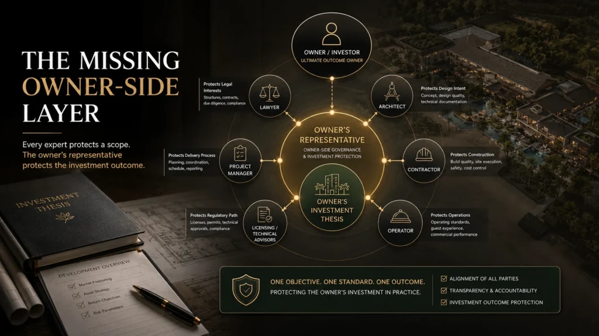
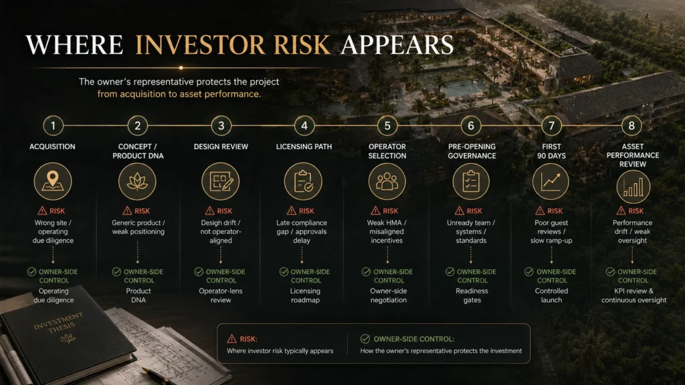
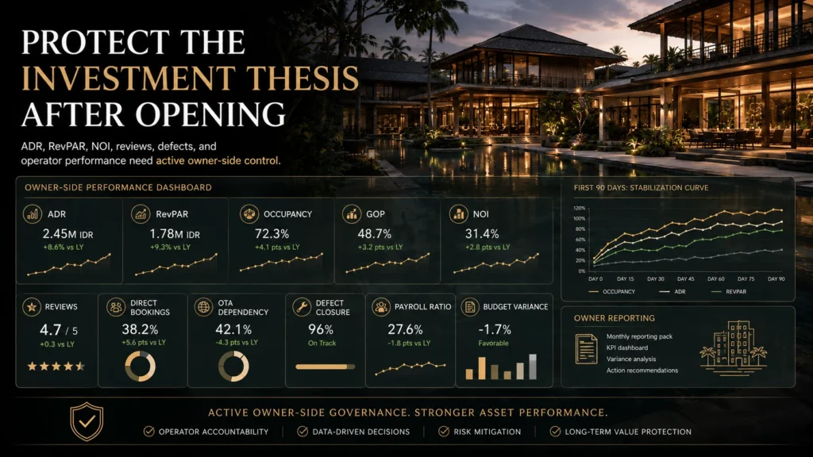

A Bali hotel owner’s representative helps protect the owner’s investment in practice, not only on paper. A lawyer can review the legal structure, contracts, and transaction risk. However, legal protection alone does not guarantee that the hotel will open properly, operate legally, perform commercially, or protect long-term asset value.
This is the gap many foreign investors discover too late. The land structure may look correct. The company may be incorporated. The contracts may be signed. Yet the asset can still fail because nobody protects the owner’s operating thesis through design, licensing, pre-opening, operator alignment, and post-opening performance control.
For serious owners, developers, family offices, and asset managers, the question is not whether legal counsel is needed. It is. The real question is whether legal counsel is enough.
In most Bali hospitality projects, the answer is no.
Key Takeaways
- A Bali hotel owner’s representative protects the owner’s commercial and operational interests before, during, and after development.
- Legal due diligence protects ownership structure, contracts, and regulatory exposure. However, it does not usually manage design drift, pre-opening readiness, operator accountability, or hotel performance.
- Bali remains an active tourism market, but demand alone does not protect an investment. In March 2026, Bali recorded 472,070 in-person foreign tourist visits, while star-rated hotel occupancy reached 52.54%.
- An owner’s representative connects legal structure, Product DNA, design logic, licensing, operator selection, pre-opening governance, and post-opening KPI control.
- The best structure is not lawyer versus owner’s representative. It is lawyer plus owner’s representative, working in parallel.
Why Bali Hotel Investors Need Owner-Side Protection Now
Bali remains one of Southeast Asia’s most visible hospitality investment markets. However, visibility does not equal investment safety.
The island is becoming more complex. Investor appetite remains high. At the same time, regulatory pressure, infrastructure stress, product competition, and operating complexity are increasing. As a result, generic hotels, weak villa conversions, under-governed developments, and poorly structured operator agreements are easier to expose than before.
Official BPS Bali data shows that foreign arrivals remain substantial. In March 2026, Bali recorded 472,070 in-person foreign tourist visits. Star-rated hotel occupancy reached 52.54%, compared with 46.61% in March 2025.
That is useful context. However, investors should not misread it.
Demand exists. Performance is not guaranteed.
A hotel still needs the right site, the right product, the right licensing path, the right operating model, the right operator structure, and the right pre-opening discipline. This is why broad “Bali is booming” logic is dangerous. As Zenith explains in Hotel Feasibility Study Is Wrong: The ADR and Occupancy Fantasy, investors should not treat ADR and occupancy assumptions as fixed certainties.
Indonesia’s regulatory environment also matters. PP No. 28/2025 governs risk-based business licensing, including business licensing, supporting business licensing, OSS services, supervision, evaluation, and sanctions. Building governance also remains central, with PP No. 16/2021 regulating core building implementation matters in Indonesia.
Therefore, hotel investors should ask one practical question:
Can this asset be designed, licensed, opened, staffed, operated, reviewed, and improved in a way that protects the original investment thesis?
That is where the owner’s representative becomes critical.
The Core Problem: Legal Protection Is Not Operating Protection
Legal due diligence is essential. A qualified Indonesian lawyer helps review land rights, corporate structure, permits, contracts, transaction documents, and legal exposure.
For a foreign investor in Bali, that is non-negotiable.
However, a lawyer does not normally own the operating questions that determine whether the hotel will work as a business:
- Is the room mix commercially logical for the target guest?
- Does the architecture support service delivery or create staffing inefficiency?
- Is the back-of-house sufficient for the intended positioning?
- Does the spa, wellness, F&B, or club component have a viable operating model?
- Are PBG, SLF, OSS, tourism licensing, and operational readiness milestones sequenced correctly?
- Does the operator contract support the owner’s commercial thesis?
- Are ADR, occupancy, RevPAR, GOP, and NOI assumptions realistic?
- Is the pre-opening budget adequate?
- Does the first 90-day opening strategy protect rate, reviews, and cash flow?
These are not purely legal questions. They are owner-side hospitality governance questions.
A Bali hotel can have a legal structure and still remain commercially weak. It can have strong architecture and still operate inefficiently. It can appoint an operator and still lack real owner-side performance control.
That is why foreign investors need a Bali hotel owner’s representative, not just a lawyer.

What Foreign Investors Often Get Wrong
Many investors treat Bali hotel investment as a simple sequence:
- Find land or an existing asset.
- Hire a lawyer.
- Set up the structure.
- Commission the architect.
- Build.
- Hire an operator or management company.
- Open.
- Expect the feasibility model to come true.
That sequence creates risk because it delays the operating logic until after the biggest capital decisions have already been made.
A stronger sequence looks different:
- Validate the investment thesis.
- Check legal structure and land-control pathway.
- Test zoning, licensing, development constraints, and operational feasibility.
- Define Product DNA, guest logic, positioning, service model, and commercial model.
- Translate the concept into architecture and technical briefs.
- Select or negotiate with the operator from an owner-side position.
- Govern pre-opening with clear accountability.
- Monitor post-opening performance against the approved thesis.
The difference is not academic. It changes CAPEX discipline, design decisions, staffing, opening readiness, contract negotiation, and long-term asset value.
This is also why pre-opening must not become a last-minute checklist. In Zenith’s Hotel Pre-Opening Management Bali: 100-Point Checklist, we make one point clear: construction completion is not operational readiness.
What a Bali Hotel Owner’s Representative Actually Does
A Bali hotel owner’s representative acts as the owner’s advocate across the project lifecycle. In hospitality, this role is especially valuable because a hotel is not only a real estate asset. It is an operating business.
A hotel depends on guest experience, service flow, staffing, technical readiness, licensing, brand promise, distribution, revenue management, and asset performance.
MGAC describes an owner’s representative as the owner’s advocate across the project lifecycle, with oversight of budgets, schedules, contracts, compliance, and stakeholder alignment. It also explains that this role differs from architects and contractors, who focus more narrowly on design or execution. See MGAC’s explanation of what an owner’s representative does in hospitality projects.
In a Bali hotel investment, the role usually covers six practical areas.
1. Pre-Acquisition Operating Due Diligence
The owner’s representative reviews the asset or site through an operating lens before the investor commits too deeply.
This includes:
- concept feasibility;
- target guest logic;
- ADR and occupancy realism;
- access and arrival experience;
- staffing implications;
- F&B, wellness, spa, or club viability;
- zoning and licensing red flags;
- operator suitability;
- CAPEX risk;
- exit and resale logic.
A lawyer may confirm whether the transaction can be structured. By contrast, the owner’s representative tests whether the hospitality investment should proceed at all.

2. Design Review With an Operator Lens
Many hotel problems enter the project through the drawings before the operating team ever sees the site.
An owner’s representative reviews the design for operating consequences:
- room category logic;
- BOH adequacy;
- service flow;
- laundry and housekeeping movement;
- kitchen extraction;
- guest arrival and luggage flow;
- pool and wellness capacity;
- staff circulation;
- maintenance access;
- storage;
- MEP implications;
- revenue-generating versus non-revenue-generating space.
This is where investors often lose money invisibly.
A design can look premium in renders but create unnecessary payroll, poor service flow, weak upsell logic, difficult maintenance, or avoidable guest complaints. Zenith addresses this operating-design gap in Hotel Architect Operator Collaboration: Make Design Operate.
3. Licensing and Readiness Coordination
Licensing is not just paperwork. In hospitality, the team must integrate licensing into the development and opening programme.
For a hotel, the owner’s team must track the relationship between:
- corporate structure;
- OSS/NIB pathway;
- relevant business activities;
- zoning and land-use suitability;
- PBG;
- SLF;
- operational permits;
- tourism-related registrations;
- fire, safety, hygiene, employment, and tax requirements where applicable.
The owner’s representative does not replace legal counsel. However, the owner’s representative should make sure the licensing path connects to the design, development, handover, and pre-opening timeline.
If the team treats licensing as late-stage admin, it can become a commercial blocker.
4. Operator Selection and Contract Alignment
A hotel operator can create value. However, the wrong structure can also create long-term friction if the contract does not match the owner’s investment logic.
An owner’s representative helps the owner evaluate:
- whether an operator is required;
- whether the asset needs a brand, management company, franchise, white-label operator, or owner-operated model;
- whether operator fees align with performance;
- whether termination rights are balanced;
- whether owner approvals are clear;
- whether the annual budget process protects the owner;
- whether reporting obligations are strong enough;
- whether performance tests are realistic;
- whether the operator’s brand standards fit CAPEX reality.
This is not only a legal negotiation. It is a commercial and operational negotiation.
A lawyer can draft and negotiate the contract language. However, the owner’s representative helps define whether the contract structure makes sense for the operating business.
5. Pre-Opening Governance
Most hotel failures begin before opening day.
The building may look nearly finished, but the hotel may not be ready. Common gaps include:
- incomplete SOPs;
- weak training;
- late recruitment;
- poor procurement control;
- untested PMS/POS systems;
- incomplete brand standards;
- missing operating licenses;
- unresolved defects;
- unclear owner/operator responsibilities;
- no soft-opening discipline;
- no commercial ramp-up plan.
An owner’s representative protects the owner by turning pre-opening into a governed process with gates, accountability, deadlines, and readiness checks.
For assets close to opening, Zenith’s 42-Point Pre-Opening Handover Audit for Bali Hospitality Properties shows the type of checks owners should demand before welcoming guests.
6. Post-Opening Asset Management
Opening is not the end of owner-side governance. It is the beginning of performance reality.
After opening, an owner’s representative or hotel asset manager should review:
- ADR;
- occupancy;
- RevPAR;
- GOP;
- NOI;
- payroll ratio;
- departmental profitability;
- guest reviews;
- channel mix;
- OTA dependency;
- direct booking performance;
- maintenance backlog;
- operator reporting;
- budget variance;
- owner cash flow.
The goal is not to micromanage the operator. Instead, the goal is to protect the owner’s asset value and identify performance problems early.
This is especially important for repositioning or distressed assets. In Zenith’s view, distressed hotel investment in Bali is rarely just a legal issue. It is usually a structure-and-execution issue.
Bali Hotel Owner’s Representative vs Lawyer vs Operator
| Role | Primary Responsibility | What They Protect | What They Usually Do Not Own |
|---|---|---|---|
| Lawyer | Legal structure, contracts, land/title review, corporate risk | Legal position and enforceability | Operating model, service flow, pre-opening readiness, commercial performance |
| Owner’s Representative | Owner-side project and operating governance | Investment thesis, CAPEX discipline, readiness, operator alignment, performance control | Formal legal advice or licensed legal opinions |
| Architect / Designer | Design concept and technical drawings | Spatial expression, design quality, technical coordination | Owner-side ROI, operating feasibility, operator accountability |
| Contractor / Construction Manager | Build execution | Construction delivery, site coordination, cost/schedule within scope | Brand promise, guest journey, commercial strategy |
| Hotel Operator | Day-to-day management and brand/service delivery | Operating execution under agreement | Independent owner advocacy against its own incentives |
The key point is simple: the owner needs someone whose only mandate is the owner’s investment outcome.
The Zenith View: Owner Representation Protects the Investment Thesis
The Zenith view is that an owner’s representative is not a luxury layer. It is a governance function.
In Bali, weak hotel projects usually fail because one of four things happened:
- The investment thesis was never properly tested.
- The design moved faster than the operating model.
- Pre-opening became a checklist instead of a controlled launch system.
- The operator was appointed without enough owner-side performance governance.
Zenith connects the parts that too many projects manage separately:
- legal structure;
- Product DNA;
- market positioning;
- design translation;
- licensing path;
- pre-opening governance;
- operator structure;
- financial model;
- commercial ramp-up;
- asset management.
This is where operator-first advisory matters.
A hotel is not protected because the land is controlled. It is protected when the asset is legally structured, commercially coherent, operationally buildable, properly opened, and actively monitored.
Owner-Side Governance Framework for Bali Hotel Investment
| Phase | Key Owner Risk | Owner’s Representative Control |
|---|---|---|
| Pre-acquisition | Buying a site or asset that cannot support the intended product | Operating due diligence, concept test, licensing red-flag review |
| Concept | Building a generic product with weak market defensibility | Product DNA, target guest, positioning, experience logic |
| Design | Beautiful design that does not operate efficiently | Design review, BOH logic, service flow, revenue-space discipline |
| Licensing | Late discovery of compliance gaps | Licensing roadmap, critical path coordination with legal and technical teams |
| Operator selection | Weak HMA or misaligned management structure | RFP, operator comparison, commercial terms, KPI logic |
| Pre-opening | Opening before team, systems, SOPs, and defects are ready | Readiness gates, SOP/training timeline, mock operations, opening controls |
| Post-opening | Performance drift and weak owner reporting | Monthly or quarterly KPI review, budget variance, asset management advisory |
Operational Implications of Appointing a Bali Hotel Owner’s Representative
For owners and developers, appointing a Bali hotel owner’s representative changes how the project is run.
It forces earlier answers to practical questions:
- Who is the target guest?
- What is the asset’s real commercial promise?
- Which spaces generate revenue and which only consume CAPEX?
- What staffing model does the design require?
- What licenses sit on the critical path?
- What must be complete before soft opening?
- What does the operator control, and what does the owner approve?
- Which KPIs define success after opening?
Without this discipline, the loudest stakeholder often shapes the decision: the architect, contractor, broker, operator, or lender.
With an owner’s representative, decisions are tested against the owner’s commercial objective.

Commercial Implications for Bali Hotel Investors
The commercial value of an owner’s representative is not only avoiding mistakes. It is also protecting the upside.
A properly governed Bali hotel project can protect:
- ADR by avoiding rushed opening discounts;
- RevPAR by aligning product, positioning, and distribution;
- NOI by controlling payroll, utilities, maintenance, and operating leakage;
- CAPEX by reducing late redesigns and change orders;
- asset value by improving compliance, performance reporting, and resale defensibility;
- owner control by improving operator accountability.
The first 90 days after opening are especially important.
Poor reviews, defects, inconsistent service, weak training, and unclear pricing can damage the commercial curve before the hotel has stabilized. Therefore, the owner’s representative should help treat opening not as a launch event, but as a controlled operating phase.
What Bali Hotel Investors Should Check Before Committing Capital
Before buying land, acquiring a hotel, funding a development, or signing an operator agreement in Bali, investors should complete six checks.
| Check | What to Review | Why It Matters |
|---|---|---|
| Legal structure | PT PMA, lease, title, contractual control | Protects legal position |
| Licensing path | OSS, KBLI, PBG, SLF, operational permits | Protects ability to build and operate |
| Product DNA | Guest, promise, positioning, experience logic | Protects market defensibility |
| Design-operating fit | BOH, flow, room mix, amenity capacity | Protects service quality and efficiency |
| Operator structure | Brand, management, franchise, lease, or owner-operated options | Protects control and performance alignment |
| Commercial model | ADR, occupancy, RevPAR, GOP, NOI, ramp-up | Protects investment thesis |
The owner’s representative should enter the process before the project becomes expensive to correct.
FAQ
Do Bali hotel investors still need a lawyer?
Yes. A qualified Indonesian lawyer remains essential for land, corporate structure, contracts, licensing interpretation, and legal risk. An owner’s representative does not replace legal counsel. The stronger structure uses both. The lawyer protects the legal framework, while the owner’s representative protects the operating and commercial execution of the hotel.
What does a Bali hotel owner’s representative do?
A Bali hotel owner’s representative acts on behalf of the owner across acquisition, design, development, pre-opening, operator coordination, and asset performance. The role usually includes operating due diligence, design review, licensing-roadmap coordination, pre-opening governance, operator alignment, and post-opening KPI review. The focus is to protect the owner’s investment thesis in practice.
Is an owner’s representative the same as a project manager?
No. A project manager usually focuses on delivery, schedule, construction coordination, and technical execution. An owner’s representative may coordinate with the project manager, but the role is broader. In hospitality, the owner’s representative also reviews guest logic, service flow, operator fit, commercial assumptions, pre-opening readiness, and asset performance.
When should a Bali hotel investor appoint an owner’s representative?
The best time is before final acquisition or before design is locked. The later the role is added, the more decisions may already be fixed: land use, architecture, room mix, CAPEX, operator structure, and licensing sequence. An owner’s representative can still add value midstream, but early involvement protects more capital.
Can an owner’s representative help with operator selection?
Yes. An owner’s representative can help define whether the project needs an operator, what type of operator is suitable, how to compare proposals, and which commercial terms matter. This includes reviewing fees, reporting, owner approvals, pre-opening obligations, performance tests, termination rights, and brand-standard implications.
Why is owner representation especially important in Bali?
Bali combines strong demand with high project complexity. Investors must manage land/control structure, licensing, building compliance, local execution, staffing, operator selection, market positioning, and increasing competitive pressure. Therefore, the risk is not only legal. The deeper risk is whether the project can open and perform as a real hospitality business.
Summary Takeaways
- A lawyer is essential, but legal protection is not the same as operating protection.
- A Bali hotel owner’s representative protects the owner’s investment thesis across acquisition, design, licensing, pre-opening, operator alignment, and post-opening performance.
- The role helps prevent design drift, weak readiness, poor operator terms, and unmanaged commercial risk.
- The owner’s representative should be involved before capital is locked into land, architecture, construction, or management agreements.
- For serious owners, investors, developers, asset managers, and family offices, owner representation is not an extra cost. It is part of investment control.
CTA
Planning to acquire, develop, reposition, or open a hotel, resort, villa estate, or wellness hospitality asset in Bali?
Zenith Hospitality Global helps owners and investors protect the investment thesis before, during, and after development - through owner-side advisory, operating due diligence, Product DNA, design review, pre-opening governance, operator alignment, and asset performance control.
Speak with Zenith before committing capital, signing an operator, or locking the design.
Start a conversation